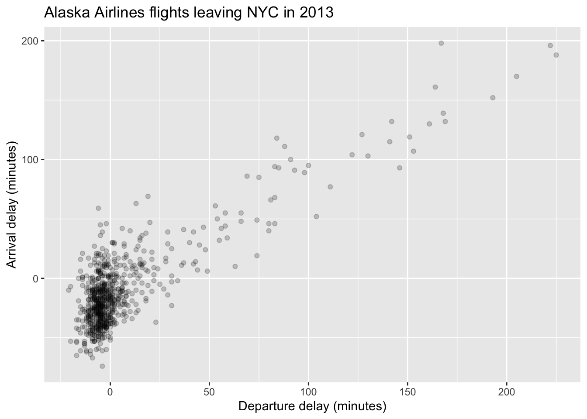
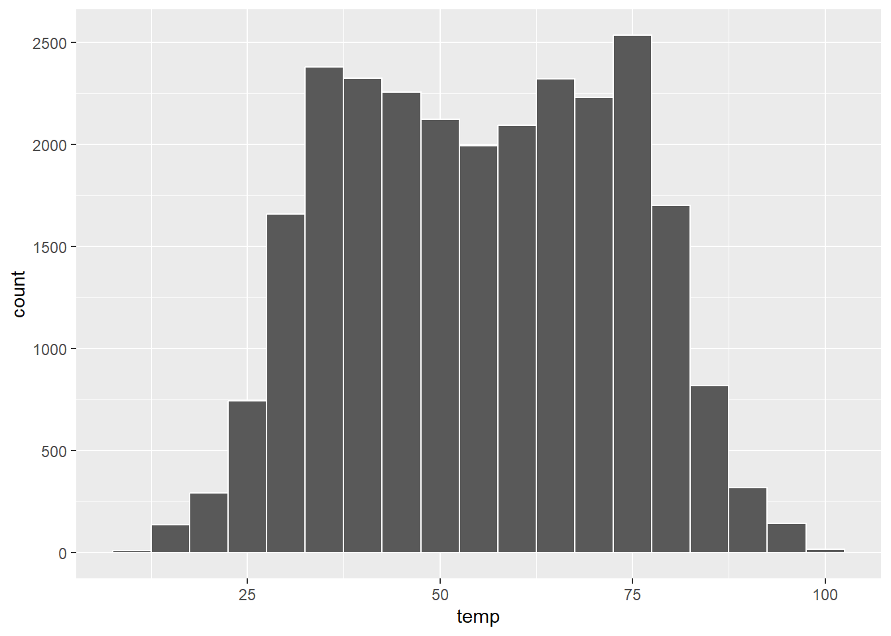
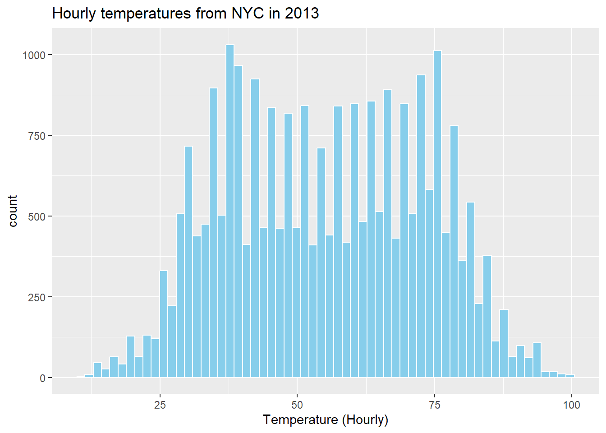
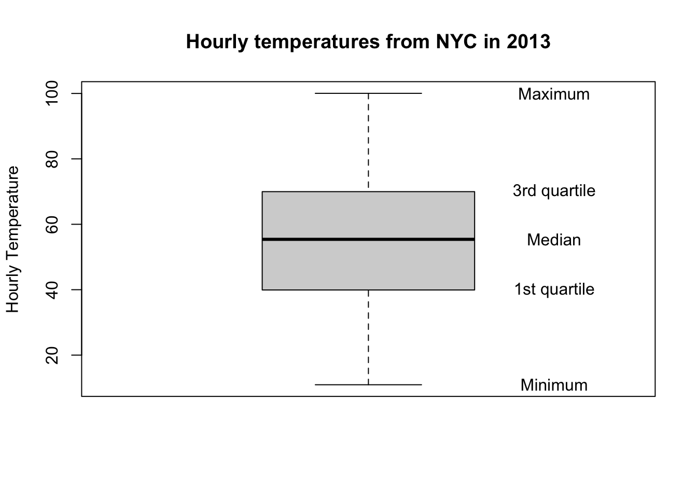

Week 1: Visualising data using R
1 Getting started
This week we will demonstrate various techniques for visualising data in R using ggplot2. This will also include the correct interpretation and understanding of the different plotting techniques.
Note
A lot of the content within this course is based on the open-source book An Introduction to Statistical and Data Science via R and thus is a useful source for additional examples and questions.
First, start by opening RStudio by going to Desktop -> Maths-Stats -> RStudio. Once RStudio has opened create a new R script by going to File -> New File -> R Script. Next go to File -> Save As... and save the script into your personal drive, either M: or K: (do not save it to the H: drive). We shall now load into R all of the libraries we will need for this session. This can be done by typing the following into your R script:
The libraries can be loaded into R by highlighting them in your script and then clicking on the Run button located in the top right of the script window. The first library ggplot2 allows us to use functions within that package in order to create nicer data visualisations. The second library nycflights13 contains data on flights from New York City in 2013 that we shall be examining.
2 Viewing the data
Before visualising any data set, we first need to know its contents. For example, the contents of the flights data within the nycflights13 library can be observed using the following command:
Code
head(flights, n = 3)# A tibble: 3 × 19
year month day dep_time sched_dep_time dep_delay arr_time sched_arr_time
<int> <int> <int> <int> <int> <dbl> <int> <int>
1 2013 1 1 517 515 2 830 819
2 2013 1 1 533 529 4 850 830
3 2013 1 1 542 540 2 923 850
# ℹ 11 more variables: arr_delay <dbl>, carrier <chr>, flight <int>,
# tailnum <chr>, origin <chr>, dest <chr>, air_time <dbl>, distance <dbl>,
# hour <dbl>, minute <dbl>, time_hour <dttm>This prints to the R console the first n = 3 rows of the flights data set, displaying each of the variables within said data set. We now know the data set contains 19 variables, as well as their names. A quick check on the size of a data set can be obtained using:
Code
dim(flights)[1] 336776 19which displays the dimensions of the data set. Thus, here we have 336776 rows and 19 columns worth of data.
To reduce the amount of data we will be working with and make things a little easier, let’s only look at Alaska Airlines flights leaving from New York City in 2013. This can be done by subsetting the data in such a way that we only observe flights from Alaska Airlines (carrier code AS), as follows:
Code
Alaska <- flights[flights$carrier == "AS", ]This essentially picks out all of the rows within the flights data set for which the carrier code is AS and discards the rest, thus creating a new data set entitled Alaska. Next week we will look at more sophisticated ways of manipulating data sets. Now, let us go on to look at different visualisations of our Alaska data set using ggplot2, starting with scatterplots.
3 Scatterplots
The first data visualisation technique we introduce is the Scatterplot (or bivariate plot), which allows for two variables to be plotted against one another, with one plotted on the x-axis, and the other on the y-axis. This allows us to examine if there is any relationship between the two variables, such as positive or negative correlation, and whether the relationship appears linear or not. Let’s say we wanted to observe the relationship between departure and arrival delays. We can do that in R using the ggplot function. First, we can set up the plotting region for our scatterplot of departure against arrival delays as follows:

Here, we have set up our plotting region by giving to the ggplot function:
- The data
Alaskaby settingdata = Alaska. - The mapping of the coordinates for the axes using
aes(x = dep_delay, y = arr_delay), whereaes()relates to the plots aesthetics. That is,-
dep_delaymaps to thexcoordinate; and -
arr_delaymaps to theycoordinate.
-
In order to include the points on the scatterplot we now need to add an additional layer using the + command. A layer combines data, aesthetic mapping, a geom (geometric object), a stat (statistical transformation), and a position adjustment:
Code
layer(
mapping = NULL,
data = NULL,
geom = "point",
stat = "identity",
position = "identity"
)The points are then added by creating a points layer:
Code
ggplot(data = Alaska, mapping = aes(x = dep_delay, y = arr_delay)) +
geom_point()
where geom_point specifies that the geometric objects to add to our plotting region are points.
When adding layers using ggplot it should be noted that:
- the
+command should come at the end of lines, otherwise R will produce an error. - when adding additional layers it is a good idea to take a new line after each
+command. This is so your code will be nice and clear with each layer given its own line of code. This is handy for code debugging.
We can change the axes labels and include a title on our plot by adding another layer as follows:
Code
ggplot(data = Alaska, mapping = aes(x = dep_delay, y = arr_delay)) +
geom_point() +
labs(x = "Departure delay (minutes)", y = "Arrival delay (minutes)",
title = "Alaska Airlines flights leaving NYC in 2013") 
3.1 Over-plotting
From our scatterplot it is clear to see that the vast majority of the points lie close to zero for both departure and arrival delays. This can make it difficult at times to observe what is going on. This is due to so many points being plotted very close to each other, and often plotted over one another in such a way that it is impossible to count how many points are actually plotted. This is referred to as over-plotting. Using ggplot, there are two ways we can address this problem:
- adjust the transparency of the plotted points using the
alphaargument. - jitter the points using the
geom_jitterfunction.
3.1.1 Adjust transparency
We shall first alter the transparency of the points and see if this improves the situation. This is done as follows:
Code
ggplot(data = Alaska, mapping = aes(x = dep_delay, y = arr_delay)) +
geom_point(alpha = 0.2) +
labs(x = "Departure delay (minutes)", y = "Arrival delay (minutes)",
title = "Alaska Airlines flights leaving NYC in 2013") 
The alpha command ranges between 0 and 1, where 0 relates to 100% transparency, while 1 (default) sets the points to be 100% opaque. By changing the transparency levels of the points we can observe clusters of points that are close to one another as they will be darker than areas of the plot with fewer points clustered together.
3.1.2 Jittering
The idea behind jittering is that each point is randomly moved, or nudged, slightly from its original position in such a way that clusters of points with the same coordinates can be observed, instead of being plotted on top of one another. To understand this, let’s create a small data set consisting purely of zeros, such that:
Code
jitter.example <- matrix(0, nrow = 10, ncol = 2)This basically creates a 10 by 2 matrix of zeros. You can look at it in the console by simply typing:
Code
jitter.exampleNow, ggplot only works with data frames and not matrices, so we need to convert jitter.example into a data frame. This can be done using:
Code
jitter.example <- as.data.frame(jitter.example)There are functions within R that can be used to determine whether an object is a matrix or a data frame. See
Code
?is.matrix
?is.data.frameNow, let’s plot our toy example:
Code
ggplot(data = jitter.example, mapping = aes(x = V1, y = V2)) +
geom_point()
Note that since changing jitter.example into a data frame, the columns have been given the default variable names V1 and V2. From the plot, if you had never seen our toy example before you would think only a single value was plotted due to them all being zero. If we shift each of the points slightly using jittering we will be able to see them more clearly:
Code
ggplot(data = jitter.example, mapping = aes(x = V1, y = V2)) +
geom_jitter(width = 0.1, height = 0.1)
Note that geom_jitter has replaced geom_point. Now we can clearly see all 10 observations plotted. The amount of horizontal and vertical jittering of the points is controlled by the width and height arguments within geom_jitter.
Now that we understand the idea behind jittering, let’s produce a jittered scatterplot of the Alaska data:
Code
ggplot(data = Alaska, mapping = aes(x = dep_delay, y = arr_delay)) +
geom_jitter(width = 30, height = 30) +
labs(x = "Departure delay (minutes)", y = "Arrival delay (minutes)",
title = "Alaska Airlines flights leaving NYC in 2013") 
Now we can see more of the points plotted within the cluster of points around (0,0). However, since this cluster is so large, it can be argued that jittering has not helped much here. Also, it is important to add enough jitter in order to separate the overlapping of points, however, not so much that we lose any pattern observed within the points. It should also be noted that jittering does not change the actual values of the points within the data set, it is merely used to help with visualising the data.
4 Histograms
Histograms allow us to look at the statistical distribution of a variable. They show us how many values of a variable fall within specified bins. These bins give ranges of values for which the variable lies. The bins can be altered, that is, by changing their width, or by increasing the number of bins, such that we see the distribution at a higher resolution.
Here, let’s take a look at the weather data set that is within the nycflights13 library. This data set contains hourly weather data from three airports (LGA, JFK and EWR) in New York City in 2013. We can look at its contents via:
Code
head(weather, n = 3)# A tibble: 3 × 15
origin year month day hour temp dewp humid wind_dir wind_speed wind_gust
<chr> <int> <int> <int> <int> <dbl> <dbl> <dbl> <dbl> <dbl> <dbl>
1 EWR 2013 1 1 1 39.0 26.1 59.4 270 10.4 NA
2 EWR 2013 1 1 2 39.0 27.0 61.6 250 8.06 NA
3 EWR 2013 1 1 3 39.0 28.0 64.4 240 11.5 NA
# ℹ 4 more variables: precip <dbl>, pressure <dbl>, visib <dbl>,
# time_hour <dttm>To create a histogram using ggplot we use the geom_histogram command, or layer, instead of geom_point as with scatterplots. We can create a histogram of the hourly temperature data in NYC in 2013 using ggplot as follows:
Code
ggplot(data = weather, mapping = aes(x = temp)) +
geom_histogram()`stat_bin()` using `bins = 30`. Pick better value with `binwidth`.
Here, ggplot tells us that it used 30 bins when creating the histogram. We can adjust the bins in ggplot using two different approaches. Either by adjusting the
- number of bins using the
binsargument; or - the width of the bins using the
binwidthargument.
Let’s first start by specifying the number of bins as follows:
Code
ggplot(data = weather, mapping = aes(x = temp)) +
geom_histogram(bins = 60, color = "white")
Note, we also specified the outline colour of the bins to make it easier to differentiate between them. The colour of the bins themselves can be changed by including the fill argument. The colour options available can be found by typing the following into the R console:
Code
colors()Instead of specifying the number of bins, we can specify their width using binwidth as follows:
Code
ggplot(data = weather, mapping = aes(x = temp)) +
geom_histogram(binwidth = 5, color = "white")
Finally, we can give the histogram a title and clean up the labels to make them more informative.
Try recreating the following histogram by setting bins = 60 and fill = 'skyblue'

See the documentation for geom_histogram() (?geom_histogram)
Code
ggplot(data = weather, mapping = aes(x = temp)) +
geom_histogram(bins = 60, color = "white", fill = "skyblue") +
labs(x = "Temperature (Hourly)",
title = "Hourly temperatures from NYC in 2013") 5 Boxplots
Another way to look at the distribution of a variable is using a boxplot. A boxplot makes use of the standard five-number summary, that is
- the minimum value;
- the first quartile or 25th percentile;
- the median (or 2nd quartile / 50th percentile);
- the third quartile or 75th percentile;
- and the maximum value.
Keeping with the hourly temperature data, the five-number summary can be obtained in R using the following command:
Code
summary(weather$temp) Min. 1st Qu. Median Mean 3rd Qu. Max. NA's
10.94 39.92 55.40 55.26 69.98 100.04 1 This provides us with the five-number summary, as well as the mean hourly temperature. There is one missing value in the hourly temperature data, which is represented in R by NA.
The boxplot of the hourly temperature data is plotted below.

The elements of the boxplot relating to the five-number summary have also been labelled. Other features of the boxplot are:
- the interquartile range (IQR), that is, the height of the box (3rd - 1st quartiles), and is a measure of the spread of the middle 50% of values. Longer boxes are indicative of greater variability.
- The dashed lines are known as whiskers and represent values less than the 25th percentile, and greater than the 75th percentile, respectively. The longer the whiskers, the more variability there is outside of the middle 50%.
Boxplots are useful visualisations when comparing the distribution of a numerical variable split across groups (or a categorical variable). For example, we could look at how the hourly temperature changes by month, where month is our categorical, or grouping, variable.
To create boxplots using ggplot we use the geom_boxplot function. If we want to look at boxplots of a variable separately for a categorical variable then we need to introduce the factor function. This converts a numerical variable into a categorical one, essentially creating labels or categories from the numeric values. For example, the month variable within the weather data set is a numerical variable taking on the values 1,\(\ldots\),12, for each month. However, it makes more sense to convert this into a categorical variable using the factor function, such that:
Code
weather$month [1] 1 1 1 1 1 1 1 1 1 1becomes
Code
factor(weather$month) [1] 1 1 1 1 1 1 1 1 1 1
Levels: 1 2 3 4 5 6 7 8 9 10 11 12with levels, or categories, 1,\(\ldots\),12 for each month. Hence, the boxplots can be produced using ggplot as follows:
Code
ggplot(data = weather, mapping = aes(x = factor(month), y = temp)) +
geom_boxplot(fill = "steelblue") +
labs(x = "Month", y = "Temperature (Hourly)",
title = "Hourly temperatures from NYC in 2013 by month") +
scale_x_discrete(labels = c("Jan", "Feb", "Mar", "Apr", "May", "Jun",
"Jul", "Aug", "Sep", "Oct", "Nov", "Dec"))
Note, we have introduced a new function scale_x_discrete, which is used to rename the labels of the boxplots. This function is used as our categorical variables are discrete in nature. After splitting the hourly temperatures by month, we now see points extending beyond the whiskers of the boxplots. These are known as outliers, and may be thought of as unusually small or large values. However, the definition of an outlier here is somewhat arbitrary as they are defined by the length of the whiskers, which are no more than 1.5 x IQR.
Try modifying the boxplot above by having a different fill color for each month.
Use the fill aesthetic to declare the variable you want to colour
Code
ggplot(data = weather, mapping = aes(x = factor(month), y = temp, fill=factor(month))) +
geom_boxplot(show.legend = FALSE) +
labs(x = "Month", y = "Temperature (Hourly)",
title = "Hourly temperatures from NYC in 2013 by month") +
scale_x_discrete(labels = c("Jan", "Feb", "Mar", "Apr", "May", "Jun",
"Jul", "Aug", "Sep", "Oct", "Nov", "Dec"))6 Barplots
Barplots, or barcharts, are used to visualise the distributions of categorical variables. This essentially provides us with the frequencies of categories within a categorical variable. Let’s take a look at the distribution of airline carriers within the flights data that flew out of New York City in 2013. We can do this by creating a table containing the number of flights from each airline carrier as follows:
Code
carrier.freq <- table(flights$carrier)
carrier.freq <- as.data.frame(carrier.freq)
colnames(carrier.freq) <- c("carrier", "number")Note, ggplot expects the data passed to it to be a data frame, which is why the above table is converted into a data frame. The names of the columns in our data frames have also been updated using the colnames function.
You can use two types of data sets to create barplots in ggplot
-
A data set with variable(s) representing the categories (e.g. the original
flightsdata set)
where geom_bar() creates a barplot layer by counting the number of cases for each level of a categorical variable.
- A data set with variables representing the categories and the counts of each category (e.g. the
carrier.freqdata set we just created)
Here, geom_col() expects a data set that already contains the counts for each group. Adding proper labels to the barplot produces:

Note, the names of the airlines relating to the carrier codes can be found by typing airlines into the R console.
Barplots can also be used to compare two categorical variables. For instance, let’s say we wanted to look at the number of flights that flew out of New York City in 2013 from each carrier and from each airport (LGA, JFK and EWR). To obtain a table of this information we simply add the flights origin to our previous table as follows:
Code
carrier.origin <- table(flights$origin, flights$carrier)
carrier.origin <- as.data.frame(carrier.origin)
colnames(carrier.origin) <- c("origin", "carrier", "number")The barplot for comparing two categorical variables is very similar in this case, where we simply pass the additional fill argument to the aes function. Including the fill argument lets ggplot plot know that we want to split the barplot according to an additional categorical variable, which is origin in this case. The barplot is then given by:
Code

Alternatively, we can use the original flights data set and specify geom_bar() as the new layer. Notice that we have also added the function coord_flip() to rotate the plot and achieve the same output as before.
Code
ggplot(data = flights,
aes(y = carrier,fill=origin)) +
geom_bar()+
coord_flip() +
labs(x = "Count", y = "Carrier",
title = "Carriers who flew out of New York City in 2013") 
This is what is referred to as a Stacked barplot since the bars for each origin are simply stacked on top of one another for each of the carriers. This provides us with a visually nice barplot to present our carrier information by airport of origin. However, there are also alternative barplots to the stacked barplot. One alternative to a stacked barplot is the side-by-side (or dodged) barplot, which, as suggested by its name, places the bars next to each other instead of on top of one another. This can be produced as follows:
Code
ggplot(data = flights,
aes(y = carrier,fill=origin)) +
geom_bar(position = 'dodge')+
coord_flip() +
labs(x = "Count", y = "Carrier",
title = "Carriers who flew out of New York City in 2013") 
This is done by passing to the either the geom_bar or the geom_col function the position of the barplots, which in this case is dodged. Before moving on, consider the following two questions:
- What could be considered a positive of using a side-by-side barplot as opposed to a stacked barplot?
- What could be a disadvantage of using a side-by-side barplot?
Lastly, let’s take a look at what is referred to as a faceted barplot. They provide an easier way to compare the carrier distributions by origin, and can be obtained as follows:
Code
ggplot(data = flights,
aes(y = carrier,fill=origin)) +
geom_bar()+
coord_flip()+
facet_wrap(~ origin, ncol = 1) +
labs(x = "Count", y = "Carrier",
title = "Carriers who flew out of New York City in 2013") 
Here we include the facet_wrap function, where we want separate barplots by origin, and hence we use ~ origin. We also choose to have them plotted in one column via ncol = 1. This makes it easier to compare their distributions now that they are not stacked on top or beside one another.
Before moving on to the next section, consider the following questions:
What is the difference between histograms and barplots?
Why can’t we use histograms to visualise categorical variables?
6.1 Percentage/proportion barplots
Comparing raw frequencies between categories can sometimes be a bit misleading in the sense that raw counts do not consider the total number events (e.g. comparing the number of flights departing from certain origin between two carries should consider the total number of flights from all the origins for those given carries). Instead of plotting the raw frequencies, we can plot the proportions or the percentages per category.
By default, ggplot maps at the beginning, using the layer data provided by the user. Alternatively, we can tell ggplot to map after a layer stat() has applied a defined statistical transformation using the after_stat function. The examples we have seen so far have used the default setting stat = "identity". Now we will use a prop statistic component to compute the proportion of the number of cases for each level of a categorical variable out of the total counts. To do this we will load the ggstats library which adds new statistics, geometries and positions to ggplot objects.
Code

Notice that these are the proportions out of the total flights. What if we want the proportions by carrier?
The prop statistic imported from the ggstats library allow us to compute custom proportions according to the by aesthetic argument (which should be declared as a factor). For example, if we want to compute the proportions separaely for each value of the carrier, we would write:
Code
ggplot(data = flights,
aes(x = carrier,
y = after_stat(prop),
fill = origin,
by=factor(carrier))) +
geom_bar(stat = "prop") +
geom_text(stat = "prop",
position = position_fill(vjust=0.5))+
labs(x = "Carrier", y = "Proportion of flights per carrier") 
Notice that we added the geom_text layer to include the percentages per carrier.
7 Linegraphs
Linegraphs are typically used when looking at time series data, that is, when we have information on how a variable changes over time. Hence, there is a natural ordering to the data when observing how something changes over time, and therefore, linegraphs should be avoided if there is no sequential ordering of a variable. Let’s again look at the hourly temperature data, but this time only for Newark International Airport in January. This can be done by first subsetting the data as follows:
Code
Newark.Jan <- weather[weather$origin == "EWR" & weather$month == 1, ]To produce linegraphs using ggplot we use the geom_line function. Hence, our linegraph for the hourly temperatures at Newark International Airport in January 2013 can be created as follows:
Code

Before moving on to the week’s tasks, consider the following:
- In the code for the linegraph above, why has
time_hourbeen plotted on the x-axis and nothour? - Why should linegraphs be avoided when there is no sequential ordering of the data?
- Why are linegraphs used when time is the explanatory variable?
- Describe the trend in hourly temperature at Newark International Airport in January 2013.